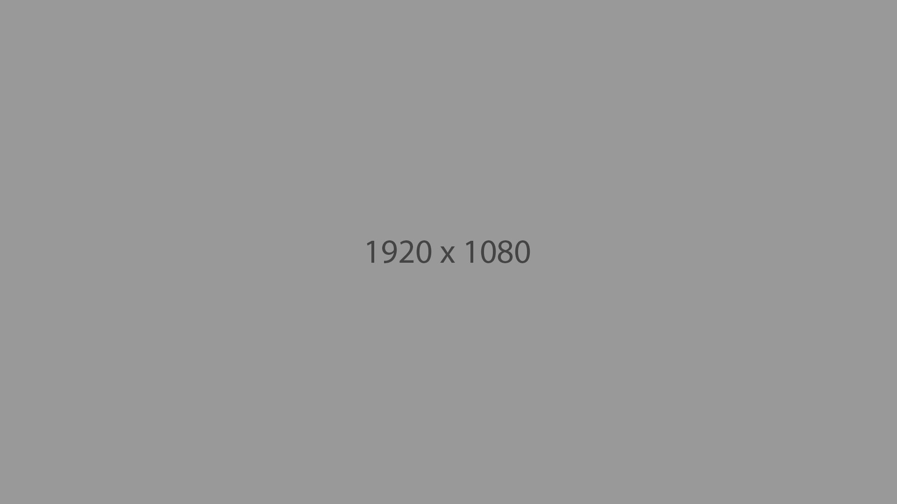

Embrace change
Monica Verdi
interior
Coaching organizacional
- At about this time of year, some months after New Year’s resolutions have been made and kept, or made and neglected, one thing is undeniable: we have a chance to learn and grow every day, no matter what we did not do yesterday or neglected to do last week. Making use of this moment, of the now, is a principle that stress management experts, psycho-therapists, meditators, and many authors such as Dr. Wayne Dyer, Jon Kabat-Zinn, and Eckhart Tolle have been talking and writing about for years.
art
Procesos individuales
- At about this time of year, some months after New Year’s resolutions have been made and kept, or made and neglected, one thing is undeniable: we have a chance to learn and grow every day, no matter what we did not do yesterday or neglected to do last week. Making use of this moment, of the now, is a principle that stress management experts, psycho-therapists, meditators, and many authors such as Dr. Wayne Dyer, Jon Kabat-Zinn, and Eckhart Tolle have been talking and writing about for years.
art
Medicaión de conflictos
- At about this time of year, some months after New Year’s resolutions have been made and kept, or made and neglected, one thing is undeniable: we have a chance to learn and grow every day, no matter what we did not do yesterday or neglected to do last week. Making use of this moment, of the now, is a principle that stress management experts, psycho-therapists, meditators, and many authors such as Dr.

design
Cohesión de equipos
- At about this time of year, some months after New Year’s resolutions have been made and kept, or made and neglected, one thing is undeniable: we have a chance to learn and grow every day, no matter what we did not do yesterday or neglected to do last week. Making use of this moment, of the now, is a principle that stress management experts, psycho-therapists, meditators, and many authors such as Dr.